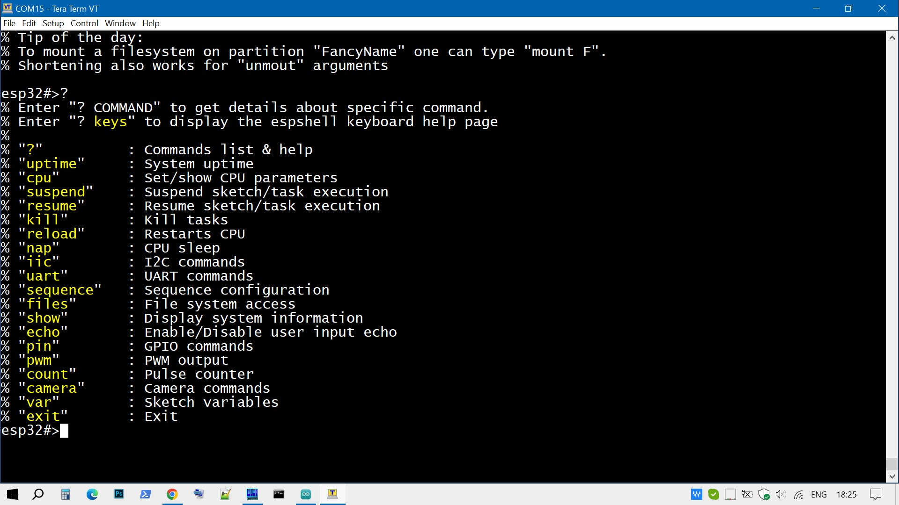
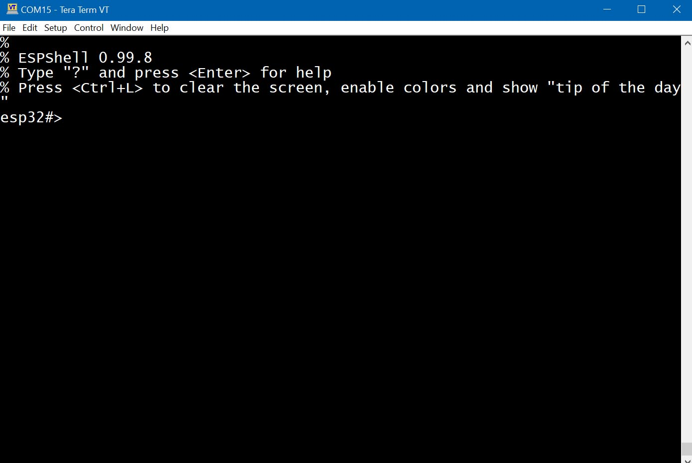
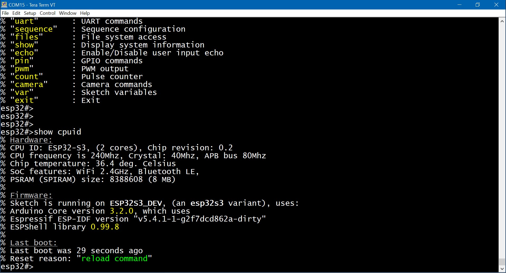
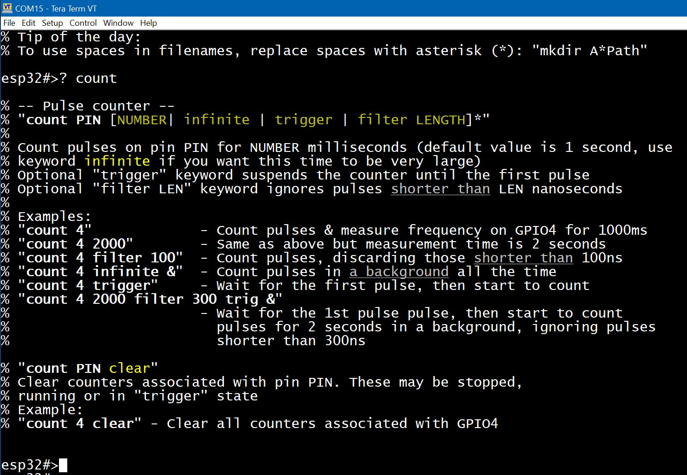

Это инструмент для отладки и разработки (библиотека для фреймворка Arduino) для использования в проектах Arduino на аппаратной платформе ESP32.
Обеспечивает интерфейс командной строки (CLI) через последовательный порт, работающий параллельно с вашим скетчем Arduino. Это не отдельная программа — этот инструмент подключается к пользовательскому скетчу (во время компиляции) и расширяет любой скетч (даже пустой) оболочкой.
Пользователь может вводить и выполнять команды (доступно множество встроенных команд) аналогично тому, как это делается в оболочке Linux, пока работает его скетч. Существуют команды для управления выполнением скетча (в определённых пределах): команды приостановки и возобновления выполнения скетча. Достаточно просто нажать Ctrl+C, чтобы приостановить выполнение скетча, при этом оболочка продолжит работать.
Пользователь взаимодействует с ESPShell либо через Serial Monitor в Arduino IDE, либо через любое другое коммуникационное ПО, такое как PuTTY, TeraTerm, утилита "cu" в Linux и многие другие. Разработчик этой библиотеки использует TeraTerm в Windows 10. Настройки по умолчанию как для Serial Monitor в Arduino IDE, так и для TeraTerm показаны на скриншотах: для TeraTerm и для Serial Monitor в Arduino IDE. ESPShell отображает ввод пользователя, поэтому "локальный эхо-режим" должен быть отключён (см. скриншоты выше).
Эта библиотека может быть полезна разработчикам, подключающим новые устройства I2C или UART, поскольку espshell имеет команды для создания/удаления аппаратных интерфейсов, отправки/приёма данных. Подключение GPS-чипов (на базе UART) или GSM-модемов, создание библиотек для I2C-устройств.
Разработчикам, занимающимся автоматизацией дома: оболочка имеет команды для управления GPIO (см. команды GPIO), так что теперь для управления реле даже не нужно писать код. Генератор PWM и измеритель частоты, счётчик импульсов и генератор шаблонов импульсов доступны на любом GPIO.

Fig. 1: ESPShell, выглядит примерно так
Требования по памяти и CPU у ESPShell достаточно низкие: shell спит большую часть времени, не нагружая CPU.
Последняя проверенная версия 0.99.8 имела следующие требования по памяти:
IRAM_ATTR (т.е. они постоянно размещаются в IRAM), их суммарный размер менее 512 байт (-512 байт от доступной IRAM)В архитектуре, которую использует Espressif, исполнение кода происходит из flash памяти (через icache), поэтому увеличением бинарника на 100кбможно пренебречь.
ESPShell выполняется на другом ядре (на многоядерных системах), чтобы минимизировать влияние на выполнение основного скетча. При старте, ESPShell определяет, на каком ядре запущен скетч, и сам пытается запуститься на другом ядре. Т.к. чаще всего пользователи не меняют настройки компиляции в Arduino IDE, ядро, на котором выполняется Arduino Core - всегда ядро#1. Это приводит к тому, что чаще всего ESPShell будет запускаться на ядре#0
Основная идея этой библиотеки — возможность вносить изменения без необходимости перекомпиляции и повторной загрузки скетча каждый раз, когда вы хотите просто немного изменить поведение или провести эксперимент. Это означает гораздо меньше циклов "изменить / перекомпилировать / загрузить / запустить / посмотреть результат".
Ещё одна цель — получить контроль над выполнением скетча и возможность просматривать переменные скетча.
Скетч использует неправильный номер пина для доступа к внешнему устройству? Это можно изменить через ESPShell.
Нужно изменить скорость интерфейса UART/I2C/и т. д.? Это делается командами оболочки.
Сканирование шины I2C, приостановка выполнения скетча, прямое общение с GPS или GSM-модемом, подключённым по UART, взаимодействие с I2C-устройствами, такими как RTC или EEPROM, изменение и просмотр переменных скетча и многое другое — всё это можно сделать с помощью команд оболочки.
Эта библиотека не требует вызова каких-либо функций для запуска оболочки, кроме одной строки
кода: добавьте
#include "espshell.h"где-нибудь в начале вашего скетча — и всё.
Скомпилируйте и загрузите скетч как обычно. ESPShell запускается автоматически при старте скетча, перехватывая управление и запуская свою задачу. Оболочка перехватывает управление в самом начале, до вызова setup() и loop() Arduino, а также до app_main() в ESP-IDF.
Когда ESPShell запускается, она отображает приветственный баннер и готова принимать команды:

Рис. 2: Приветственный баннер
Примечание: ESPShell ожидает инициализации Serial; если пользовательский скетч не инициализирует Serial (то есть Serial.begin( ... ) ни разу не вызывается), то ESPShell будет неактивна, находясь в состоянии сна, ожидая запуска Serial (то есть, когда скетч вызовет Serial.begin( ... )). Если ESPShell была настроена для использования другого UART (например, UART1), то она будет ждать вызова Serial1.begin( ... ).
ESPShell хорошо работает в Serial Monitor Arduino IDE, однако предпочтительнее подключаться к оболочке через терминальные программы. Автор использует TeraTerm в Windows, но любое другое ПО тоже подойдёт. Serial Monitor Arduino — это не полноценная терминальная программа, и это ограничивает использование некоторых функций ESPShell: подсветки синтаксиса, горячих клавиш, UART-моста и других.
ESPShell предоставляет интерфейс командной строки (CLI) с возможностью редактирования команд, историей введённых команд и подсветкой синтаксиса;
Пользователь взаимодействует с оболочкой через последовательный интерфейс (UART или USB-CDC), вводя команды и/или нажимая горячие клавиши; ESPShell отображает приглашение (например, "esp32#>"), принимает и выполняет команды, введённые пользователем — аналогично оболочке Linux: анализирует ввод, выполняет запрошенные действия, отображает ошибки (если они есть), и цикл повторяется.

Рис. 2: Типичная сессия espshell: пользователь выполняет команду "show cpuid"
These keys are recognized by ESPShell:
| Клавиша | Значение / Выполняемое действие |
|---|---|
| [ENTER] | Выполнить команду, прервать выполняемую команду |
| [ARROWS] | Стрелки: перемещение курсора влево/вправо. Вверх/вниз — прокрутка истории команд. |
| [DEL] | Как в Блокноте |
| [BACKSPACE] | Как в Блокноте |
| [HOME] и [END] | Эти клавиши не работают. Вместо них используйте Ctrl+A как <HOME> и Ctrl+E как <END>. |
| [TAB] | Быстрый переход от одного слова к другому. Быстрое переключение между аргументами команды — многократное нажатие позволяет прокручивать их все. |
| Ctrl+R | Поиск в истории. Нажмите Ctrl+R и начните ввод. Нажмите <ENTER>, чтобы найти команду, введённую ранее. |
| Ctrl+K | Очистить строку от курсора до конца |
| Ctrl+L | Очистить экран, сохранить пользовательский ввод, включить цвета и показать подсказку |
| Ctrl+Z | То же, что и "exit" + <ENTER>. Переход на уровень вверх в иерархии команд. Используется для выхода из подкаталогов. |
| Ctrl+C | Приостановка выполнения скетча. Возобновление — командой "resume". |
| [ESC]56[ESC] | Ввод произвольного ASCII-символа: нажмите <ESC>, затем введите ASCII-код (1–3 цифры) и снова <ESC>. Пример: отправить break (Ctrl+C, код 3): <ESC>3<ESC> |
| [ESC] [BACKSPACE] | Если просто <BACKSPACE> удаляет 1 символ, то <ESC> + <BACKSPACE> удаляет 1 слово. |
Обратите внимание, что страницу справки по комбинациям клавиш можно открыть, выполнив команду оболочки "? keys":

Рис. 3: Встроенная справка по команде ? keys
Выполнив команду "? keys", можно найти комбинации клавиш, которые работают даже в «примитивных» терминалах: если, например, стрелки в вашем терминале работают некорректно, можно использовать Ctrl+F и Ctrl+B в качестве альтернативы: Ctrl+F двигает курсор вперёд ([F]orward →), Ctrl+B — назад (←).
Назначения клавиш должны быть более или менее интуитивными для пользователей Linux shell.
ПРИМЕЧАНИЕ: Простые терминальные программы, такие как Serial Monitor Arduino, не умеют отправлять коды клавиш Ctrl+C и Ctrl+Z, а они необходимы, например, для работы с GSM/LTE-модемами.
ESPShell не будет автоматически дополнять команды при нажатии [TAB]: вместо этого ESPShell просто принимает неполный ввод, то есть команды и их аргументы можно сокращать. Давайте рассмотрим разницу:
В Linux-оболочке (например, bash) пользователь вводит "upt" и нажимает <TAB>, чтобы оболочка дополнила команду до "uptime".
В отличие от этого, в ESPShell можно просто ввести "upt" (или даже "up") и нажать <Enter>. ESPShell не требует полного ввода команды, достаточно ввести, например, "seq" вместо "sequence".
Такие команды, как, например, "pin 19 out high delay 500 low delay 100", можно записывать как "p 19 o h d 500 l d 500" — и оболочка всё поймёт.
ESPShell старается отличать сокращённые команды, чтобы избежать случайного выполнения неправильных команд: команды "uptime" и "uart 1" обе можно сократить до "u". Но так как команда "uptime" не имеет аргументов, а "uart" всегда требует аргумент, оболочка сможет распознать, что "u 1" — это "uart 1", а не "uptime". Однако так бывает не всегда, поэтому не стоит чрезмерно сокращать: "sh c" может означать как "show counters", так и "show cpuid", и в таком случае ESPShell выберет первую команду из списка — в данном случае это будет "show counters". (Список команд можно получить, введя команду "?" или "help")
ESPShell старается быть информативным и имеет встроенную систему справки, которая может выполнять несколько функций — предоставлять страницы справки для команд и предоставлять детали и возможные решения при возникновении ошибок: например, попытка использовать несуществующий пин, скорее всего, приведет к сообщению о номерах пинов, доступных на данной плате.
Система справки доступна через команду/горячую клавишу "?": как команда, она отображает страницы справки для команд и список доступных команд. Как горячая клавиша, она отображает справку для команды, которую пользователь в данный момент вводит.
Для получения списка всех доступных команд нужно ввести "?" и нажать <Enter>:

Рис. 4: Доступные команды
Обратите внимание, что iic, uart, sequence, files, camera — это каталоги команд, каждый из которых имеет свой собственный набор команд.
Пользователь может читать страницы справки для команд, введя вопросительный знак "?" и ключевые слова: либо сокращённые, либо полные.
Например, чтобы прочитать страницу справки для команды "sequence", можно ввести "? seq" и нажать <ENTER>; другие примеры: "? pin", "? count" и так далее: вопросительный знак и имя команды отобразят страницы справки для команд.
Ниже приведён пример выполнения "? count":

Рис. 5: Встроенная страница справки для команды count
Однако если вы хотите прочитать страницы справки во время ввода команды (например, если вы не помните, какой аргумент должен быть следующим), просто нажмите "?" — и страница справки появится выше вашего ввода. Вы можете попробовать ввести "cou" и нажать "?", чтобы увидеть страницу справки для команды "count".
Вопросительный знак — это горячая клавиша, и такое поведение может быть раздражающим в случаях, когда вам нужно ввести символ "?" и не вызывать систему справки. Например, если вы пишете строку "Hello World?" в какой-то файл, нажатие "?" вызовет страницу справки, и это не то, что мы хотим. Одно из решений — использовать <ESC>63<ESC> для ввода ASCII-кода (63 — это "?") или отключить обработку горячей клавиши "?" с помощью команды:
esp32#>var bypass_qm 1(Команда var здесь устанавливает внутреннюю переменную оболочки "bypass_qm" в значение 1)
Когда отображается типичная страница справки, можно заметить, что для описания синтаксиса команды используются специальные символы (вместе с цветами, на цветных терминалах). Синтаксис команды можно найти в самом начале любой страницы справки. Давайте рассмотрим страницу справки для команды "count": (см. Рис. 5, или введите "? count" и нажмите <ENTER>)
esp32#>? count
% -- Pulse counter --
% "count PIN [NUMBER | trigger | filter LENGTH]*"
%
% Count pulses on pin PIN for NUMBER milliseconds (default value is 1 second)
% Optional "trigger" keyword suspends the counter until the first pulse
% Optional "filter LEN" keyword ignores pulses shorter than LEN nanoseconds
...
...
Это первые строки страницы справки для команды "? count". Здесь мы можем увидеть те самые специальные символы: квадратные скобки "[" и "]", вертикальную черту "|", звёздочку "*" и несколько слов, написанных прописными буквами.
Символ | Значение |
UPPERCASE | Число или строка текста. Любой ввод пользователя. В примере выше говорится, что команда "count" имеет 3 таких параметра: номер пина, время измерения и длина. В большинстве команд параметр в верхнем регистре — это число, однако некоторые команды могут ожидать и текст. |
lowercase | Это ключевые слова: сама команда, слова "trigger" и "filter". На страницах справки они обычно желтые (имя команды — белое). |
[ ] | Квадратные скобки используются для обозначения НЕОБЯЗАТЕЛЬНЫХ параметров. На цветных терминалах они отображаются темно-желтым цветом. В примере выше есть только 1 обязательный параметр (номер пина), в то время как остальные — необязательные и могут быть опущены. |
| | Вертикальная черта: это логическая операция "ИЛИ". В значении "это ИЛИ то". Пример выше говорит, что мы можем ввести ЧИСЛО или ключевое слово "trigger" или ключевое слово "filter" с параметром LENGTH. |
* | Звездочка, расположенная рядом с закрывающей скобкой (т.е. ")*" или "]*"), указывает на то, что всё внутри скобок может появляться несколько раз. |
Другие символы, которые также используются на страницах справки (но не в примере выше) — это символ диапазона (две точки, "..") и обязательный символ (круглые скобки, "()"):
| 1..10 | Число в диапазоне от 1 до 10 включительно. |
| (arg1|arg2|...|argN)* | Обязательный аргумент: любая комбинация arg1 и arg2, но не пустая (должен быть указан хотя бы один аргумент). |
| [arg1|arg2|...|argN]* | Необязательный аргумент: любая комбинация arg1 и arg2, включая пустой аргумент. |
По умолчанию все команды ESPShell являются блокирующими (ну, большинство из них, не все). Это означает, что оболочка будет ожидать завершения команды перед тем, как начать принимать новый ввод: команды выполняются поочередно, одна за другой.
Это поведение можно изменить, используя символ &:
Добавление ""&"" как последнего аргумента к любой команде инструктирует ESPShell выполнять эту конкретную команду как отдельную задачу, параллельно с другими процессами. Это поведение хорошо известно пользователям Linux, где & используется для выполнения команд в фоновом режиме.
Эта опция (выполнение в фоновом режиме) особенно полезна для команд "pin" и "count", которые могут занять много времени для завершения. Каждая выполняемая фоновая команда выделяет около 5000 байт памяти стека, которая освобождается после завершения выполнения.
Любую фоновую команду можно остановить с помощью команды kill
Команды ESPShell сгруппированы в командные директории: команды, связанные с UART, находятся в директории "uart", команды, работающие с файлами, в директории "files" и так далее. Главная командная директория — это та, которую вы видите, когда запускаете ESPShell. Главная командная директория содержит команды И другие командные директории; вы можете подумать о командных директориях как о настоящих каталогах файловой системы, заполненных исполняемыми файлами.
Если пользователь хочет выполнить команды, связанные с UART, он/она должен войти в соответствующую командную директорию:
Пример: вход в режим настройки UART
esp32#>uart 0
esp32-uart0>
Выполнение команды "uart 0" переключает текущую командную директорию в директорию команд UART0; затем, нажав "Ctrl+Z" или выполнив команду "exit", можно вернуться в Главную директорию.
Когда вы находитесь в любой командной директории, команды из внешней директории доступны и могут быть выполнены, даже если они не отображаются в списке команд:
Пример:
Вход в командную директорию UART0:
esp32#>uart 0
% You are about to configure the Serial espshell is running on. Be careful
% Entering UART configuration mode. Ctrl+Z or "exit" to return
% Hint: Main commands are still avaiable (but not visible in "?" command list)
Список всех доступных команд:
esp32-uart0>?
% Enter "? command" to get details about specific command.
% Enter "? keys" to display the espshell keyboard help page
%
% "?" : Commands list & help
% "up" : Initialize uart (pins/speed)
% "baud" : Set baudrate
% "down" : Shutdown
% "read" : Read data from UART
% "tap" : Talk to device connected
% "write" : Send bytes over this UART
% "exit" : Exit
Выполнение команды, которая не отображается в списке, но существует в главной директории команд:
esp32-uart0>uptime
% Last boot was 17 seconds ago
% Restart reason was "Board power-on"
esp32-uart0>
В приведенном примере оболочка ищет в главной командной директории, когда обнаруживает, что команда "uptime" отсутствует в директории uart0.
Чтобы выйти из командной директории, используется команда "exit". Примечание: Ctrl+Z является горячей клавишей для команды "exit".
Другие командные директории, доступные в ESPShell: uart, i2c, files, sequence и настройки камеры.
| Команда | Описание |
pin PIN [ARG1 | ARG2 | ... | ARGn ]* Разные команды для работы с пинами (GPIO). Последовательность команд с аргументами (может быть всего один аргумент), при этом первым аргументом всегда является номер пина. Команда позволяет создавать маленькие "программы" (последовательность действий и задержек), которые выполняются на пинах (GPIO). Дополнительную информацию и примеры по этой команде можно найти в документации (связанная команда: "show iomux") | |
pwm PIN FREQ [DUTY [CHANNEL]] Генераторы PWM. | |
count PIN [NUMBER | infinite | trigger | filter LENGTH]* Счетчик импульсов / измеритель частоты. Для подробностей см. Pulse Counter / Измеритель частоты (связанная команда: "show counters") | |
var [NUMBER | NAME | NAME VALUE ] Манипуляции с переменными Sketch. См. эту страницу для использования этой функции в вашем коде; команда используется для отображения/изменения переменных sketch в реальном времени. Поддерживаются простые типы и массивы простых типов; Другая возможность этой команды — преобразование чисел в/из двоичной/восьмеричной/десятичной/шестнадцатеричной систем. | |
iic NUM Вход в режим шины I2C.
| |
uart NUM Доступ к интерфейсу UART X. | |
sequence NUM Режим генератора сигналов. | |
files Вход в режим файлового менеджера. | |
| show | show KEYWORD [ARG1 | ARG2 | ... | ARGn]* В ESPShell пользователь может отображать различную информацию (о sketch, процессоре, памяти и т. д.) используя команду "show". В зависимости от используемого ключевого слова может быть 0, 1, 2 или больше аргументов:
|
kill [-9 | -15] TASK_ID Команды управления процессами: завершить, приостановить или возобновить задачу. | |
echo [on | off | silent ] colors [on | off | auto ] history [on | off ] tty NUM Эти 4 команды управляют вводом и выводом в shell; См. эту страницу для деталей синтаксиса команд и подробного описания. | |
uptime | uptime Показывает, сколько времени прошло с последней перезагрузки; показывает причину последней перезагрузки. Для этой команды нет отдельной документации: это простая команда без аргументов. |
cpu FREQ Устанавливает частоту процессора в FREQ МГц. Список поддерживаемых частот будет показан при попытке установить неподдерживаемую частоту (например, 99 МГц):
Пример:
esp32#>cpu 99
% Поддерживаемые частоты: 240, 160, 120, 80, 40, 20 и 10
| |
reload | reload Перезагружает ESP32. Это программная перезагрузка, которая не сбрасывает регистры аппаратных (периферийных) устройств. |
nap | nap [NUM] Переводит процессор в режим легкого сна.
Пример:
esp32#>nap
% Entering light sleep
С аргументом: переводит процессор в легкий сон на NUM секунд, процессор просыпается только по таймеру, других способов отмены сна нет. |
ESPShell library Copyright (c) 2024, 2025 Viacheslav Logunov <vvb333007@gmail.com>, all rights reserved
ESPShell contains code from Editline library (ancient version, from here):
Copyright 1992,1993 Simmule Turner and Rich Salz, All rights reserved This software is not subject to any license of the American Telephone and Telegraph Company or of the Regents of the University of California. Permission is granted to anyone to use this software for any purpose on any computer system, and to alter it and redistribute it freely, subject to the following restrictions: 1. The authors are not responsible for the consequences of use of this software, no matter how awful, even if they arise from flaws in it. 2. The origin of this software must not be misrepresented, either by explicit claim or by omission. Since few users ever read sources, credits must appear in the documentation. 3. Altered versions must be plainly marked as such, and must not be misrepresented as being the original software. Since few users ever read sources, credits must appear in the documentation. 4. This notice may not be removed or altered.
ESPShell contains code from Arduino Core 3.0.5
Copyright 2015-2016 Espressif Systems (Shanghai) PTE LTD Licensed under the Apache License, Version 2.0 (the "License"); you may not use this file except in compliance with the License.
{kind=link}
{kind=link}
{kind=link}